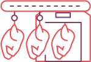

1987
Founded in Singapore as Kee Song Brothers Poultry Industries Pte Ltd,
marking the
beginning of Kee Song's journey in poultry farming and processing.

1991
Pioneered Singapore's poultry industry by becoming the first company to
implement
an
automated slaughtering system.
1992
Expanded regionally as the first Singapore poultry company to farm in
Malaysia,
establishing:
- Meng Kee Poultry (M) Sdn Bhd
- Lucky Poultry (M) Sdn Bhd
1999
Achieved ISO 9000 certification, becoming one of the first ISO-certified
poultry
slaughterhouses in Singapore.
2002
Attained ISO 9001:2000 and HACCP certification, reinforcing commitment to
food
safety
and quality assurance.
2012
Meng Kee Poultry awarded Golden Bull Award - "100 Outstanding SME" in
Malaysia.
2011
Incorporation and listing of Kee Song Bio-Technology Holdings Limited (KSBT)
on
Taiwan's GreTai Securities Market (GTSM).
2010
Sakura Chicken and Imperial Cordyceps Chicken began regional distribution
across
Asia, marking Kee Song's first step into international markets.
2007
Official launch of Sakura Chicken, redefining premium, clean, and
compassionate
poultry.
2003
Meng Kee established modern closed-house farm in Malaysia, introducing fully
automated farming systems.

2013
- Official launch of CaroGold ChickenTM
- Introduction of advanced farming technology in Taiwan.

2014
- Established KISSMornTM,the Group's in-house Ready-to-Cook / Ready-to-Eat brand
- Launched Kee Song Online, the Group's e-commerce playorm

2015
- Established Kee Song Agriculture (M) Sdn Bhd in Seremban, Malaysia.
- Meng Kee Poultry awarded "Emerging Poultry Integrator Award" at Asian Livestock Industry 2015.

2016
Exported Kee Song Premium Chickens to Hong Kong, retailing in premium
supermarkets.

2017-2018
- First poultry company in Malaysia to obtain myOrganic Certification, certified by the Ministry of Agriculture and Agro-Based Industry Malaysia
- Company renamed to Kee Song Food Corporation (S) Pte Ltd
- Kee Song Agriculture awarded "Outstanding Emerg ing Organisation in Livestock IndustrV'
- Commissioned a new processing plant at 26 Senoko Way, Singapore

2025
Sakura Chicken awarded the Healthier Choice Symbol (HCS) and Organic Farming
Certification, affirming our commitment to better farming and healthier food.

2023
Kee Song Group awarded "Outstanding Product Innovation" for farm products.

2022
Awarded FSSC 22000 Food Safety Certification, strengthening global food
safety
standards.

2021
Commissioned a new slaughterhouse at Mandai Estate, enhancing operational
capacity.

2020
Listed products across all major e-commerce platforms including RedMart,
Amazon
Prime, Lazada, and Shopee.
2026
Introduction of the new Sakura brand identity, marking a new chapter for the
brand.